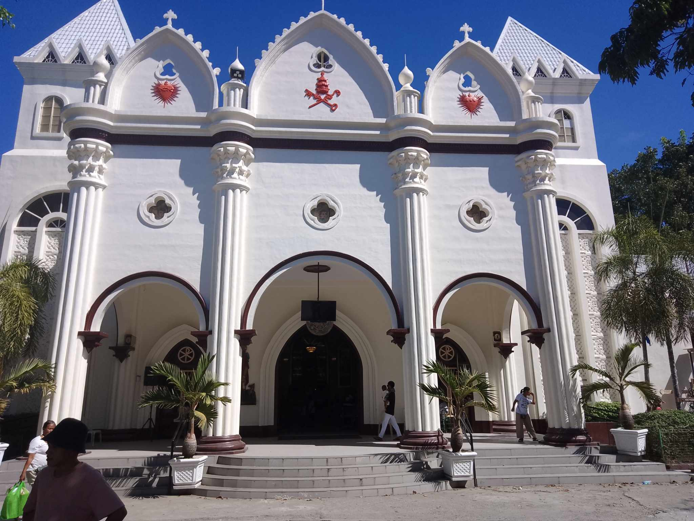
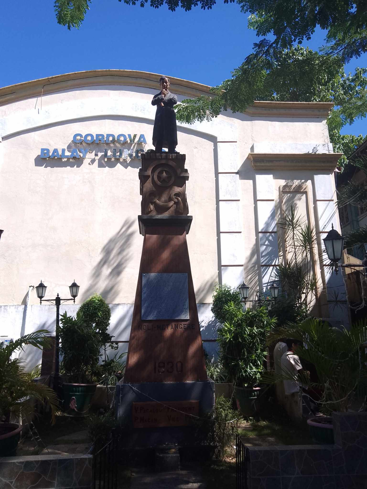
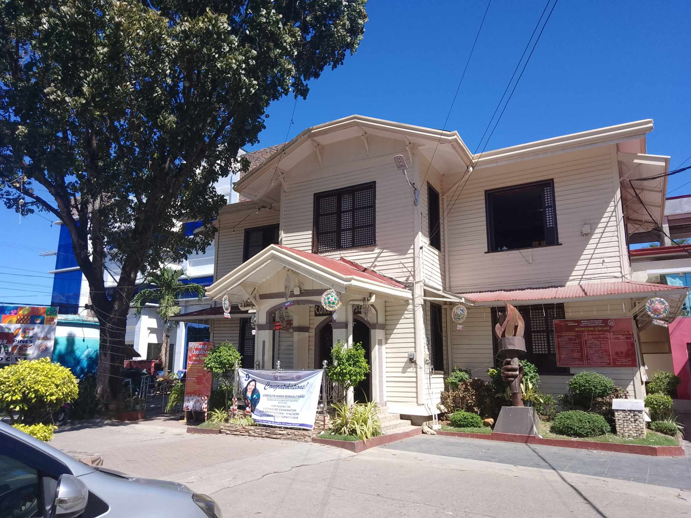
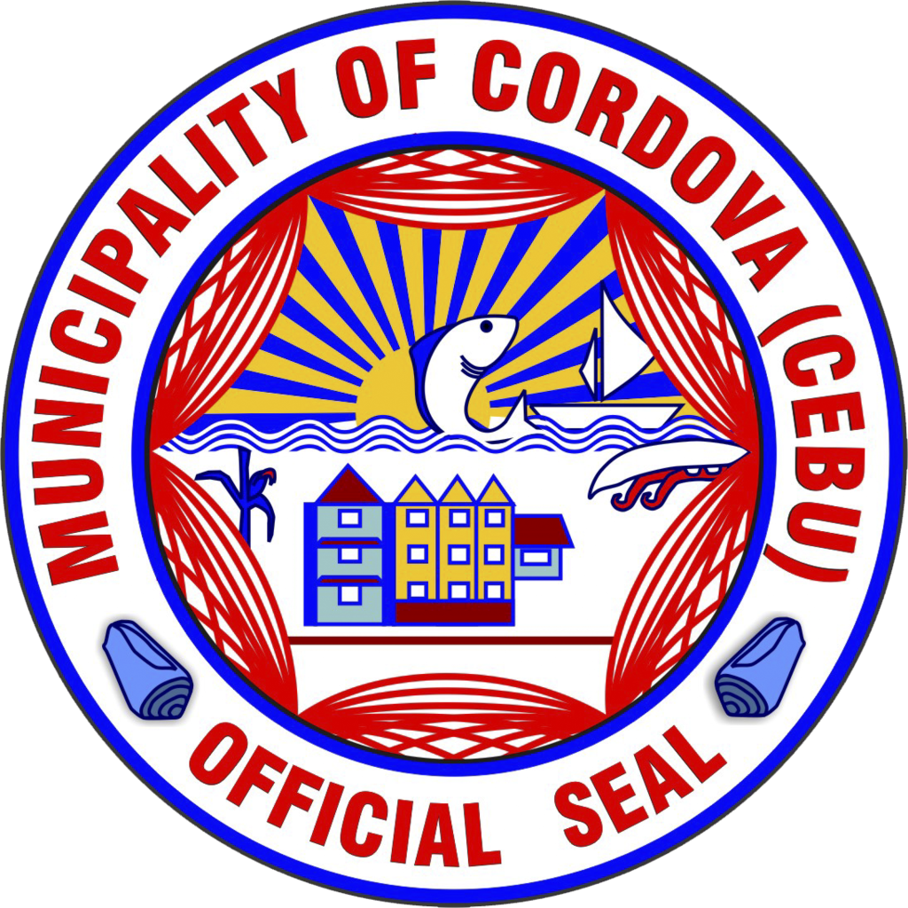

History

Mao ni siya ang San Roque Parish sa Cordova ma locate ni siya doul sa Cordova Sports Complex.
Pipipla nani la tuig simbahana daghan na ni aaging mga padre paruko ani na simbahan, ang akong pinakaganahan na pare
diri is ang former assistant sa parish priest na si Alvin B. Lao. Ako usa ka acolytes diri nga simbahan,
4 nako ka tuig nag serbisyo ani nga simbahan, ga sugod ko september 2019, og ang ka angayan sa simbahan wala gihapon ma usab og mas ni angayan pa og pamaayu,
dili ikalimud na ang mga tao diri sa simbahan naay maayu apan naa puy dili. Ang pag serbisyo sa ginoo napa dakog grabo sa ako og nag pa tarung sa akoa.


mao kini ang hulagway sa gawas sa Monisipyo sa lungsod sa cordava.
Wala lang kaay mi mo sulod kay dili pa kani pribado og bawal pa maka sulod ang mga istudyante apan dili kini permaninti,
kadiyot lang hinoun ni pero pag adto namo na time wala mi gi pa sulod.
Ang sulod anha daw kay mga karaang butang nga nag pa bilin diha sa sulod sa munisipyo.

Gihisgutan usab sa kasaysayan ang Cordova tungod sa mga kinaiyahan sa lugar.
Ang Cordova usa ka lugar nga mahimong maoy halangdon nga destinasyon tungod sa iyang mga baybayon,
mangrove areas, ug natural nga kahayag.
Ang Cordova ug Mactan Island ingon man nagtanyag og lugar nga may historiyang kon diin gipahayag ang kahigayonan ni Lapu-Lapu,
usa ka lokal nga lider nga nanguna sa pagsugpo sa ekspedisyon ni Ferdinand Magellan sa Pag-abot sa Mactan noong 1521.